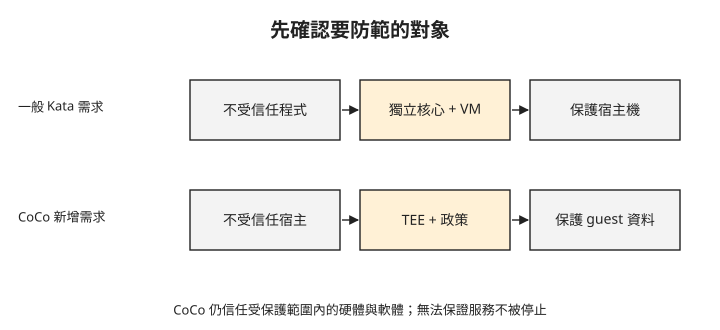

Day 5：傳輸加密之後，誰能讀到處理中的資料？¶

付款服務已使用加密連線，資料在網路上不會直接以明文傳送。但服務計算時仍要把資料解開；如果資料擁有者不希望宿主機管理者讀取這份明文，前幾章的網路保護還不夠。這章會先指出要防範的對象，再判斷一般 Kata 隔離與機密容器各能處理哪一段風險。
先寫清楚攻擊者與要保護的資料¶
威脅模型描述誰可能攻擊、要保護什麼，以及哪些元件仍受信任。對同一個「隔離 Pod」要求，團隊可能有兩種不同意思：平台希望不受信任的程式無法控制節點；資料擁有者則希望節點管理者不能讀取程式的私密資料。
這兩種需求都合理，但需要不同證據。先看一般容器：它使用宿主機核心，透過 namespace 等機制隔開工作負載。若需求是降低惡意程式利用共享核心影響宿主機的風險，可以考慮在工作負載與宿主機之間加入 VM 邊界。
Kata Containers 會把 Pod 放進具有自身核心的輕量 VM。VM 內的環境稱為 guest；管理 VM 執行的虛擬化層稱為 hypervisor。一般 Kata 的目標包含保護宿主機免受不受信任工作負載影響，但沒有提供「即使宿主機不可信，guest 記憶體仍保密」的保證。Kata 威脅模型
改變的是信任範圍¶
Confidential Containers（CoCo，機密容器）以機密 VM 隔開工作負載與不受信任的宿主環境。Kata 提供 Pod 與 VM 的整合基礎，CoCo 再結合硬體保護、guest 內政策與遠端證明流程。遠端證明（remote attestation）讓另一方驗證由硬體與執行環境產生的證據，再依政策決定是否釋出秘密。CoCo 證明流程
guest 內的 Kata Agent 負責設定與控制 Pod。宿主會透過 Kata Agent API 發出操作請求，guest 內的政策則限制哪些請求可以執行，避免不受信任的宿主藉由這個介面觸發不允許的操作。CoCo 跨越信任邊界的請求限制
一般 Kata 提供獨立核心與 VM 邊界；機密容器還要求特定硬體與軟體組合，使宿主環境不能直接讀取受保護的 guest 私有記憶體明文。CoCo 的信任模型把 guest 外的 kubelet、containerd、宿主核心與 Kata shim 都列為不受信任，而 guest 內的核心、韌體與輔助元件仍在信任範圍內。CoCo 信任模型
以 Kata Agent 為例：它在受保護的 guest 內管理 Pod，因此其安全性也是信任前提。若這類程式遭入侵，即使硬體仍阻止宿主直接讀取私有記憶體，也無法代替 guest 內程式本身的安全性。
因此不能把機密容器理解成「不需要信任任何人」。你仍依賴硬體機制、guest 軟體與驗證政策，也必須避免應用程式自己透過 API 或日誌洩漏資料。
TEE 保護執行中的私有記憶體¶
TEE（Trusted Execution Environment，可信執行環境）提供硬體支援的隔離範圍。本課接下來使用 VM 層級的 TEE：AMD SEV-SNP；Intel TDX 是另一種 VM 層級技術。它們不只是在磁碟上加密檔案，而是保護 VM 執行時的記憶體與相關隔離屬性。實際保證依硬體平台與設定而異。
下圖分別列出兩種需求。重點是中間的保護機制及最右邊受保護的對象，而不是把「用了 VM」直接當成機密運算。

圖中一般 Kata 的 VM 邊界用來降低工作負載影響宿主的風險；CoCo 的 TEE 與 guest 政策則用來保護 guest 內的機密資料。
這項保護也不表示宿主機什麼都看不到。宿主環境仍負責排程 VM、提供網路與裝置，可以觀察部分外部行為，也可以不讓工作負載執行。拒絕服務並不因為記憶體受保護就消失；guest 主動輸出的資料也不會自動保密。CoCo 信任範圍與限制
所以需求應寫成具體範圍，例如「解密金鑰只交給符合指定條件的 guest，私有記憶體不向宿主環境暴露明文」，而不是「用了 TEE 就完全安全」。
遠端服務如何知道這個 guest 符合條件？¶
資料擁有者不能只依工作負載提供的環境宣告，就判定它在符合條件的機密 VM 裡；交付秘密之前，需要透過遠端證明驗證執行環境。
這個流程至少分成取得證據、驗證證據、檢查政策、交付秘密。硬體證據涵蓋哪些開機元件，與容器映像是否另有簽章或政策驗證，必須分清楚；一份硬體報告不會自動證明應用程式邏輯正確。CoCo 證明流程
Pod 的 Running 狀態不足以判定金鑰交付條件是否成立；「秘密只交給符合條件的環境」還需要另一套允許與拒絕測試。
主機觀測能力會在哪裡改變？¶
前面使用 eBPF 觀察宿主核心處理的封包與事件。工作負載改放進 VM 後，guest 的系統呼叫在 guest 核心內執行，不能再假定宿主機能用原來的方式直接觀測。同時，宿主機仍可能看到 VM 程序、外層網路流量與資源使用。
eBPF 與機密容器可以出現在同一個系統，只是觀測範圍受執行位置與信任邊界限制。若希望取得 guest 內的應用指標，需要在受信任環境內安排觀測與輸出方式，並確認輸出不洩漏原本要保護的資料。
想一想¶
- 平台要執行不受信任的外掛程式，主要擔心容器逃逸。一般 Kata 能提供哪一層額外隔離？這是否同時保證宿主機讀不到資料？
- Pod 已 Running，秘密服務是否就應該交付金鑰？還缺哪些判斷？
- 宿主機能停止一台機密 VM，是否表示記憶體機密性已失效？這涉及哪種不同的安全要求？
小結¶
先指出攻擊者與資料位置，才能選對隔離機制。一般 Kata 提供獨立核心與 VM 邊界；CoCo 進一步結合 TEE、guest 政策及遠端證明，保護不受信任宿主環境中的敏感工作負載。Day 6 先驗證一般 Kata 的執行環境，Day 7 再加入機密運算硬體，Day 8 則檢查秘密是否依證明結果釋出。
延伸閱讀¶
想再深入，可以從這幾份開始：
- Kata 威脅模型：工作負載與宿主的隔離需求。
- CoCo 信任模型：guest 內外的信任範圍與不涵蓋的攻擊。
- AKS 機密容器總覽：本課後續使用的整合方式。
Kubernetes 標誌為 CNCF（Linux Foundation）官方資產，此處作社群教學用途。